Android Gradle
Android项目使用 Gradle 作为构建框架，Gradle 又是以Groovy为脚本语言。所以学习Gradle之前需要先熟悉Groovy脚本语言。
Groovy是基于Java语言的脚本语言，所以它的语法和Java非常相似，但是具有比java更好的灵活性。下面就列举一些和Java的主要区别。
Android Gradle 的 Project 和 Tasks
这个Gradle中最重要的两个概念。每次构建（build）至少由一个project构成，一个project 由一到多个task构成。项目结构中的每个build.gradle文件代表一个project，在这编译脚本文件中可以定义一系列的task；task 本质上又是由一组被顺序执行的Action`对象构成，Action其实是一段代码块，类似于Java中的方法。
Android Gradle 构建生命周期
每次构建的执行本质上执行一系列的Task。某些Task可能依赖其他Task。哪些没有依赖的Task总会被最先执行，而且每个Task只会被执行一遍。每次构建的依赖关系是在构建的配置阶段确定的。每次构建分为3个阶段：
- Initialization: 初始化阶段
这是创建Project阶段，构建工具根据每个build.gradle文件创建出一个Project实例。初始化阶段会执行项目根目录下的settings.gradle文件，来分析哪些项目参与构建。
所以这个文件里面的内容经常是：
include ':app'
include ':libraries:someProject'
这是告诉Gradle这些项目需要编译，所以我们引入一些开源的项目的时候，需要在这里填上对应的项目名称，来告诉Gradle这些项目需要参与构建。
- Configuration:配置阶段
这个阶段，通过执行构建脚本来为每个project创建并配置Task。配置阶段会去加载所有参与构建的项目的build.gradle文件，会将每个build.gradle文件实例化为一个Gradle的project对象。然后分析project之间的依赖关系，下载依赖文件，分析project下的task之间的依赖关系。
- Execution:执行阶段
这是Task真正被执行的阶段，Gradle会根据依赖关系决定哪些Task需要被执行，以及执行的先后顺序。
task是Gradle中的最小执行单元，我们所有的构建，编译，打包，debug，test等都是执行了某一个task，一个project可以有多个task，task之间可以互相依赖。例如我有两个task，taskA和taskB，指定taskA依赖taskB，然后执行taskA，这时会先去执行taskB，taskB执行完毕后在执行taskA。
说到这可能会有疑问，我翻遍了build.gradle也没看见一个task长啥样，有一种被欺骗的赶脚！
其实不是，你点击AndroidStudio右侧的一个Gradle按钮，会打开一个面板，内容差不多是这样的：
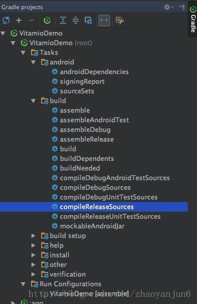
里面的每一个条目都是一个task，那这些task是哪来的呢？
一个是根目录下的 build.gradle 中的
dependencies {
classpath 'com.android.tools.build:gradle:2.2.2'
}
一个是 app 目录下的 build.gradle 中的
apply plugin: 'com.android.application'
这两段代码决定的。也就是说，Gradle提供了一个框架，这个框架有一些运行的机制可以让你完成编译，但是至于怎么编译是由插件决定的。还好Google已经给我们写好了Android对应的Gradle工具，我们使用就可以了。
根目录下的build.gradle中dependencies {classpath ‘com.android.tools.build:gradle:2.2.2’}是Android Gradle编译插件的版本。
app目录下的build.gradle中的apply plugin: ‘com.android.application’是引入了Android的应用构建项目，还有com.android.library和com.android.test用来构建library和测试。
所有Android构建需要执行的task都封装在工具里，如果你有一些特殊需求的话，也可以自己写一些task。那么对于开发一个Android应用来说，最关键的部分就是如何来用AndroidGradle的插件了。
认知Gradle Wrapper
Android Studio中默认会使用 Gradle Wrapper 而不是直接使用Gradle。命令也是使用gradlew而不是gradle。这是因为gradle针对特定的开发环境的构建脚本，新的gradle可能不能兼容旧版的构建环境。为了解决这个问题，使用Gradle Wrapper 来间接使用 gradle。相当于在外边包裹了一个中间层。对开发者来说，直接使用Gradlew 即可，不需要关心 gradle的版本变化。Gradle Wrapper 会负责下载合适的的gradle版本来构建项目。
Android 三个文件重要的 gradle 文件
Gradle项目有3个重要的文件需要深入理解：项目根目录的 build.gradle , settings.gradle 和模块目录的 build.gradle 。
-
1.settings.gradle 文件会在构建的 initialization 阶段被执行，它用于告诉构建系统哪些模块需要包含到构建过程中。对于单模块项目， settings.gradle 文件不是必需的。对于多模块项目，如果没有该文件，构建系统就不能知道该用到哪些模块。
-
2.项目根目录的 build.gradle 文件用来配置针对所有模块的一些属性。它默认包含2个代码块：buildscript{…}和allprojects{…}。前者用于配置构建脚本所用到的代码库和依赖关系，后者用于定义所有模块需要用到的一些公共属性。
buildscript {
repositories {
jcenter()
}
dependencies {
classpath 'com.android.tools.build:gradle:2.3.2'
}
}
allprojects {
repositories {
jcenter()
}
}
task clean(type: Delete) {
delete rootProject.buildDir
}
buildscript：定义了 Android 编译工具的类路径。repositories中, jCenter是一个著名的 Maven 仓库。
allprojects:中定义的属性会被应用到所有 moudle 中，但是为了保证每个项目的独立性，我们一般不会在这里面操作太多共有的东西。
- 3.模块级配置文件 build.gradle 针对每个moudle 的配置，如果这里的定义的选项和顶层 build.gradle定义的相同。它有3个重要的代码块：plugin，android 和 dependencies。
定制项目属性（project properties)
在项目根目录的build.gradle配置文件中，我们可以定制适用于所有模块的属性，通过ext 代码块来实现。如下所示：
ext {
compileSdkVersion = 22
buildToolsVersion = "22.0.1"
}
然后我们可以在模块目录的build.gradle配置文件中引用这些属性,引用语法为rootProject.ext.{属性名}。如下：
android {
compileSdkVersion rootProject.ext.compileSdkVersion
buildToolsVersion rootProject.ext.buildToolsVersion
}
Android studio gradle Task
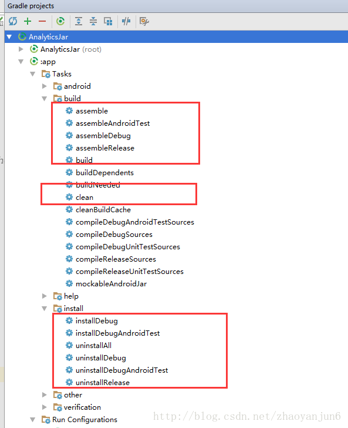
//构建
gradlew app:clean //移除所有的编译输出文件，比如apk
gradlew app:build //构建 app module ，构建任务，相当于同时执行了check任务和assemble任务
//检测
gradlew app:check //执行lint检测编译。
//打包
gradlew app:assemble //可以编译出release包和debug包，可以使用gradlew assembleRelease或者gradlew assembleDebug来单独编译一种包
gradlew app:assembleRelease //app module 打 release 包
gradlew app:assembleDebug //app module 打 debug 包
//安装，卸载
gradlew app:installDebug //安装 app 的 debug 包到手机上
gradlew app:uninstallDebug //卸载手机上 app 的 debug 包
gradlew app:uninstallRelease //卸载手机上 app 的 release 包
gradlew app:uninstallAll //卸载手机上所有 app 的包
这些都是基本的命令，在实际项目中会根据不同的配置，会对这些task 设置不同的依赖。比如 默认的 assmeble 会依赖 assembleDebug 和assembleRelease，如果直接执行assmeble，最后会编译debug，和release 的所有版本出来。如果我们只需要编译debug 版本，我们可以运行assembleDebug。
除此之外还有一些常用的新增的其他命令，比如 install命令，会将编译后的apk 安装到连接的设备。
lint 检测
- 忽略编译器的 lint 检查
android {
lintOptions {
abortOnError false
}
}
buildTypes 定义了编译类型
android{
buildTypes {
release {
minifyEnabled true //打开混淆
proguardFiles getDefaultProguardFile('proguard-android.txt'), 'proguard-rules.pro'
}
debug {
minifyEnabled false //关闭混淆
proguardFiles getDefaultProguardFile('proguard-android.txt'), 'proguard-rules.pro'
}
}
}
productFlavors 多渠道打包
AndroidManifest.xml 里设置动态渠道变量
<meta-data
android:name="UMENG_CHANNEL"
android:value="${UMENG_CHANNEL_VALUE}" />
在 build.gradle 设置 productFlavors , 这里假定我们需要打包的渠道为酷安市场、360、小米、百度、豌豆荚。
android {
productFlavors {
kuan {
manifestPlaceholders = [UMENG_CHANNEL_VALUE: "kuan"]
}
xiaomi {
manifestPlaceholders = [UMENG_CHANNEL_VALUE: "xiaomi"]
}
qh360 {
manifestPlaceholders = [UMENG_CHANNEL_VALUE: "qh360"]
}
baidu {
manifestPlaceholders = [UMENG_CHANNEL_VALUE: "baidu"]
}
wandoujia {
manifestPlaceholders = [UMENG_CHANNEL_VALUE: "wandoujia"]
}
}
}
或者批量修改
android {
productFlavors {
kuan {}
xiaomi {}
qh360 {}
baidu {}
wandoujia {}
}
productFlavors.all {
flavor -> flavor.manifestPlaceholders = [UMENG_CHANNEL_VALUE: name]
}
}
这样在打包的时候就可以选择渠道了
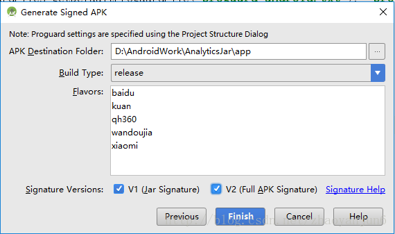
或者用命令打包 ，比如：
gradlew assembleWandoujiaRelease //豌豆荚 release 包
gradlew assembleWandoujiaDebug //豌豆荚 debug 包
多渠道设置包名
有时候我们需要分渠道设置 applicationId 、友盟的 appkey 、友盟渠道号。
productFlavors {
google {
applicationId "com.wifi.cool"
manifestPlaceholders = [
UMENG_APPKEY_VALUE : "456789456789",
UMENG_CHANNEL_VALUE: "google",
]
}
baidu{
applicationId 'com.wifi.hacker'
manifestPlaceholders = [
UMENG_APPKEY_VALUE : "123456789789",
UMENG_CHANNEL_VALUE : "baidu",
]
}
}
Signing 签名
在 android 标签下添加 signingConfigs 标签，如下：
android {
signingConfigs {
config {
keyAlias 'yiba'
keyPassword '123456'
storeFile file('C:/work/Key.jks')
storePassword '1234567'
}
}
}
可以在 release 和 debug 包中定义签名，如下：
android {
signingConfigs {
config {
keyAlias 'yiba'
keyPassword '123456'
storeFile file('C:/work/Key.jks')
storePassword '1234567'
}
}
buildTypes {
release {
minifyEnabled false
proguardFiles getDefaultProguardFile('proguard-android.txt'), 'proguard-rules.pro'
signingConfig signingConfigs.config
}
debug {
minifyEnabled false
proguardFiles getDefaultProguardFile('proguard-android.txt'), 'proguard-rules.pro'
signingConfig signingConfigs.config
}
}
}
依赖管理
依赖 jcenter 包
每个库名称包含三个元素：组名:库名称:版本号
compile 'com.android.support:appcompat-v7:25.0.0'
依赖本地 module
compile project(':YibaAnalytics')
依赖 jar 包
- 把 jar 包放在 libs 目录下
- 在 build.gradle 中添加依赖
dependencies {
compile files('libs/YibaAnalytics5.jar')
}
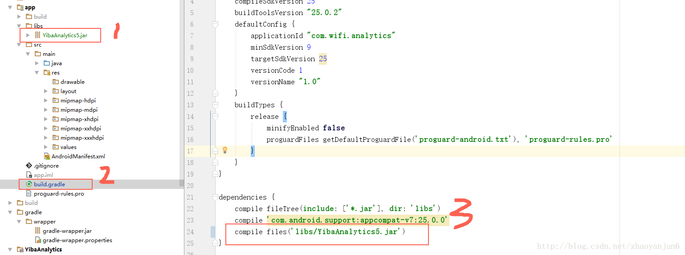
依赖 aar 包
- 把 aar 包放到 libs 目录下
- 在 build.gradle 中添加依赖
repositories {
flatDir {
dirs 'libs'
}
}
dependencies {
compile(name:'YibaAnalytics-release', ext:'aar')
}
如图所示：
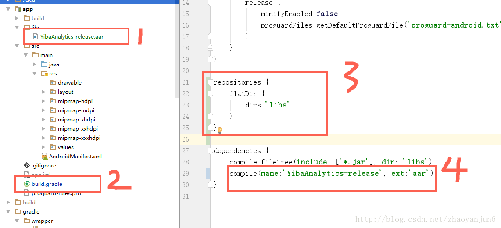
- 自定义依赖包目录
当我们的 aar 包需要被多个 module 依赖时，我们就不能把 aar 包放在单一的 module 中，我们可以在项目的根目录创建一个目录，比如叫 aar 目录，然后把我们的 aar 包放进去，如图所示：
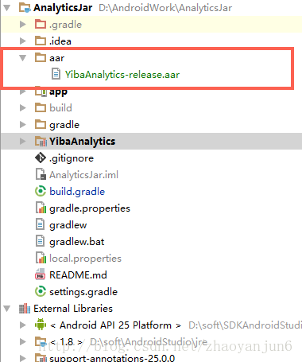
在项目的根目录的 build.gradle 的 allprojects 标签下的 repositories 添加 ：
flatDir {
dirs '../aar'
}
../aar 表示根目录下的 aar 文件夹。
如图所示：
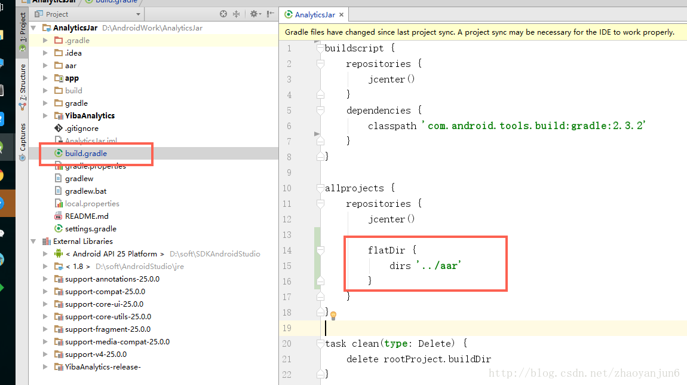
然后就可以添加依赖了，如下所示：
compile(name:'YibaAnalytics-release', ext:'aar')
依赖配置
有些时候，你可能需要和sdk协调工作。为了能顺利编译你的代码，你需要添加SDK到你的编译环境。你不需要将sdk包含在你的APK中，因为它早已经存在于设备中，所以配置来啦，我们会有5个不同的配置：
- compile
- apk
- provided
- testCompile
- androidTestCompile
compile是默认的那个，其含义是包含所有的依赖包，即在APK里，compile的依赖会存在。
apk的意思是apk中存在，但是不会加入编译中，这个貌似用的比较少。
provided的意思是提供编译支持，但是不会写入apk。
排除依赖兼容包
有时候我们在引入依赖包的时候，会额外的引入 v7, v4 的包，对我们的项目造成额外的负担，我们需要把这个兼容包排除，可以使用 exclude 就能做到。
compile('com.google.firebase:firebase-ads:11.0.4', {
exclude group: 'com.android.support' //排除v7 , v4 包
})
native包（so包）
用c或者c++写的library会被叫做so包，Android插件默认情况下支持native包，你需要把.so文件放在对应的文件夹中：
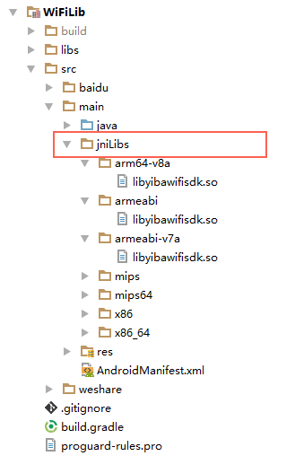
注意
jniLibs 目录应该和 Java 目录在同一级
defaultConfig 详解
defaultConfig 对应的是 ProductFlavor 类。
resConfigs ： 过滤语言
如果你的app中仅支持1,2种语言，但是可能引用的lib库包含多种其他语言的strings资源，这个时候我们可以通过resConfig指定我们需要的strings资源。
android {
defaultConfig {
applicationId "com.yiba.sharewe.lite.activity"
minSdkVersion 14
targetSdkVersion 24
versionCode 46
versionName "1.74"
resConfigs 'en', 'zh-rCN' ,'es' //本次打包，只把 en(英文)、zh-rCN(中文简体)、es（西班牙语）打进保内，其他语言忽略
}
}
resConfigs ： 过滤 drawable文件夹的资源
一般情况下，我们打完包，res 下面的资源如图所示：
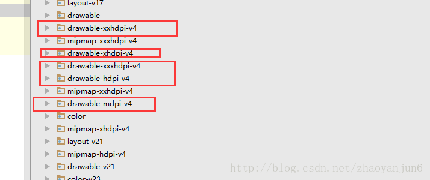
现在加上资源过滤规则：
android {
defaultConfig {
applicationId "com.wifi.analytics"
minSdkVersion 9
targetSdkVersion 25
versionCode 1
versionName "1.0"
resConfigs "hdpi" //打包的时候只保留 drawable-xhdpi 文件夹里面的资源
}
}
这次我们打包效果如下：
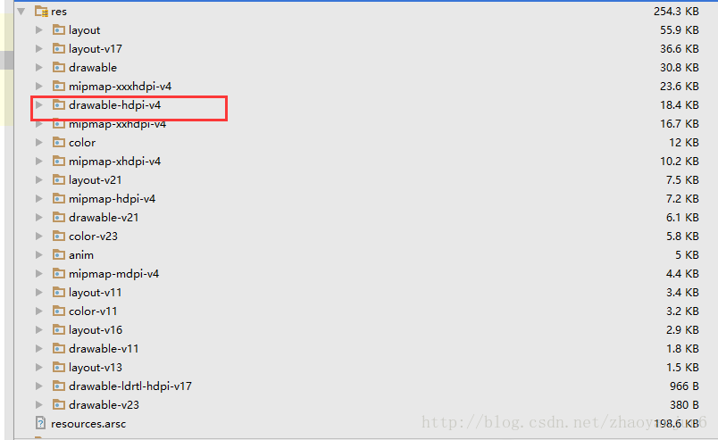
buildTypes 详解
buildTypes{}对应的是 BuildType 类
继承关系
BuildType 继承 DefaultBuildType ； DefaultBuildType 继承 BaseConfigImpl ；
BaseConfigImpl
--- DefaultBuildType
--- BuildType
buildTypes的属性：
name：build type的名字
applicationIdSuffix：应用id后缀
versionNameSuffix：版本名称后缀
debuggable：是否生成一个debug的apk
minifyEnabled：是否混淆
proguardFiles：混淆文件
signingConfig：签名配置
manifestPlaceholders：清单占位符
shrinkResources：是否去除未利用的资源，默认false，表示不去除。
zipAlignEnable：是否使用zipalign工具压缩。
multiDexEnabled：是否拆成多个Dex
multiDexKeepFile：指定文本文件编译进主Dex文件中
multiDexKeepProguard：指定混淆文件编译进主Dex文件中
buildType的方法：
1.buildConfigField(type,name,value)：添加一个变量生成BuildConfig类。
2.consumeProguardFile(proguardFile)：添加一个混淆文件进arr包。
3.consumeProguardFile(proguardFiles)：添加混淆文件进arr包。
4.externalNativeBuild(action)：配置本地的build选项。
5.initWith：复制这个build类型的所有属性。
6.proguardFile(proguardFile)：添加一个新的混淆配置文件。
7.proguradFiles(files):添加新的混淆文件
8.resValue(type,name,value)：添加一个新的生成资源
9.setProguardFiles(proguardFileIterable):设置一个混淆配置文件。
initWith ：复制属性
android {
compileSdkVersion 25
buildToolsVersion "25.0.2"
defaultConfig {
applicationId "com.wifi.analytics"
minSdkVersion 9
targetSdkVersion 25
versionCode 1
versionName "1.0"
}
buildTypes {
release {
minifyEnabled false
proguardFiles getDefaultProguardFile('proguard-android.txt'), 'proguard-rules.pro'
}
debug {
minifyEnabled false
proguardFiles getDefaultProguardFile('proguard-android.txt'), 'proguard-rules.pro'
}
myType {
initWith debug //完全复制 debug 的所有属性‘
minifyEnabled true //自定义打开混淆
}
}
}
applicationIdSuffix 、versionNameSuffix ：添加后缀
android {
compileSdkVersion 25
buildToolsVersion "25.0.2"
defaultConfig {
applicationId "com.wifi.analytics"
minSdkVersion 9
targetSdkVersion 25
versionCode 1
versionName "1.0"
}
buildTypes {
release {
minifyEnabled false
proguardFiles getDefaultProguardFile('proguard-android.txt'), 'proguard-rules.pro'
}
debug {
minifyEnabled false
proguardFiles getDefaultProguardFile('proguard-android.txt'), 'proguard-rules.pro'
applicationIdSuffix "zhao" //applicationId 追加后缀名 zhao
versionNameSuffix "debug" //versionName 追加后缀名 debug1.0
}
}
}
效果图，如下：
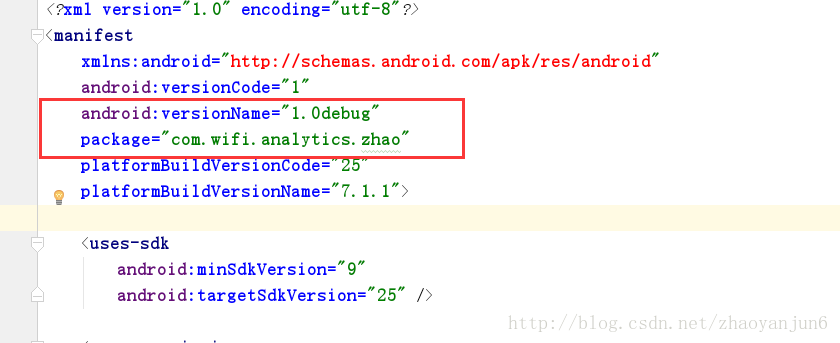
buildConfigField： 自定义属性
在 build.gradle 文件中定义 buildConfigField 属性
android {
buildTypes {
release {
minifyEnabled false
proguardFiles getDefaultProguardFile('proguard-android.txt'), 'proguard-rules.pro'
buildConfigField "String", "API_ENV", "\"http://yiba.com\"" //自定义String属性
}
debug {
minifyEnabled false
proguardFiles getDefaultProguardFile('proguard-android.txt'), 'proguard-rules.pro'
buildConfigField "String", "API_ENV", "\"http://yiba.com\"" //自定义String属性
}
}
}
然后点击同步按钮，然后就可以在 build 目录看到 debug 和 release 信息。
debug 环境下的 BuildConfig 如下：
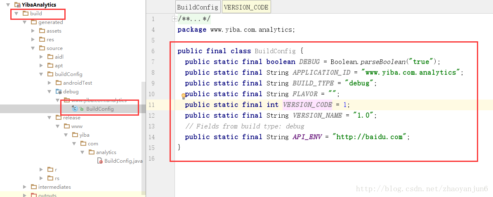
release 环境下的 BuildConfig 如下：
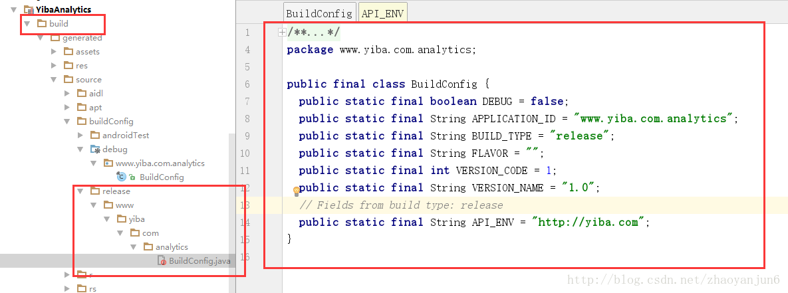
当然我们也可以在代码中获取自定义的值：
//获取变量值
String API = BuildConfig.API_ENV ;
上面演示了自定义 String 变量，也可以 自定义 int 、boolean
android {
buildTypes {
debug {
minifyEnabled false
proguardFiles getDefaultProguardFile('proguard-android.txt'), 'proguard-rules.pro'
buildConfigField "String", "API_ENV", "\"http://www.baidu.com\"" //自定义 String 值
buildConfigField "Boolean", "openLog", "true" //自定义 boolean 值
buildConfigField "int", "age", "10" //自定义 int 值
}
}
}
Gradle 实现差异化构建
情景1
LeakCanary 是 square 公司出品的一个检测内存泄漏的开源库。
GitHub ： https://github.com/square/leakcanary
我们一般这样集成
dependencies {
compile 'com.squareup.leakcanary:leakcanary-android:1.5.2'
}
然后我们在 Application 类中初始化：
public class MyApplication extends Application {
@Override
public void onCreate() {
super.onCreate();
LeakCanary.install(this);
}
}
但是这样集成有一个弊端，就是 debug 和 release 包都会把 LeakCanary 的源码打进去，如果我们在 release 包中不把 LeakCanary 源码打进去，怎么办？ 还好 LeakCanary 给我们提供了一个方法，方法如下：
dependencies {
//打 debug 包
debugCompile 'com.squareup.leakcanary:leakcanary-android:1.5.1'
//打 release 包
releaseCompile 'com.squareup.leakcanary:leakcanary-android-no-op:1.5.1'
}
leakcanary-android-no-op 是一个空壳，里面有2个空类，所以就可以避免把 LeakCanary 源码打进 release 包。但是这种方式有个缺陷，如果一些开源库没有提供 releaseCompile 库，那我们改怎么办了？下面的情景2 就会讲到解决方案。
情景2
Stetho 是 Faceboo k开源的Andorid调试工具。当你的应用集成Stetho时，开发者可以访问Chrome，在Chrome Developer Tools中查看应用布局，网络请求，sqlite，preference 等等。
官网：http://facebook.github.io/stetho/
从官网可以看到 stetho 没有提供 releaseCompile 包 ， 情景1 的方案就不能用了。新的思路集成方案如下：
dependencies {
debugCompile 'com.facebook.stetho:stetho:1.5.0'
}
在 src 目录下创建 debug 目录、release 目录 ，然后分别在 debug 目录 和 release 目录 创建 java 目录 ， 在 java 目录中创建包名，比如： com.app , 如下图所示：
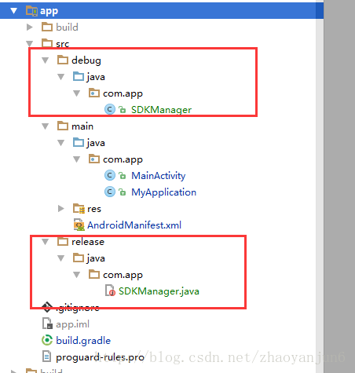
debug 目录下创建 SDKManage 类 ，如下 ：
public class SDKManager {
public static void init(Context context) {
//初始化 Stetho
Stetho.initializeWithDefaults(context);
}
}
release 目录下创建 SDKManage 类 ，如下 ：
public class SDKManager {
public static void init(Context context) {
//这是一个空方法，目的是不引入 Stetho 源码
}
}
在住项目中的 MyApplication 类，并且完成 Stetho 的初始化，如下：
public class MyApplication extends Application {
@Override
public void onCreate() {
super.onCreate();
SDKManager.init(this);
}
}
这样我们便完成了简单的差异化构建, 打出来的 release 包就没有 Stetho 源码。
SourceSet
SourceSet 简介
SourceSet 可以定义项目结构，也可以修改项目结构。Java插件默认实现了两个SourceSet，main 和 test。每个 SourceSet 都提供了一系列的属性，通过这些属性，可以定义该 SourceSet 所包含的源文件。比如，java.srcDirs，resources.srcDirs 。Java 插件中定义的其他任务，就根据 main 和 test 的这两个 SourceSet 的定义来寻找产品代码和测试代码等。
SourceSet 定义源码目录
在 Android 项目中，我们可以在 src/main/java 目录新建 Java 文件，如下图所示：
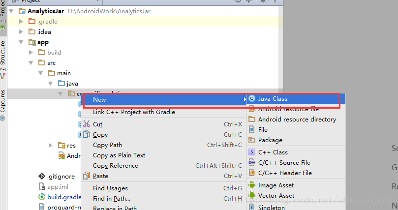
现在我们在 src 目录下，新建 test1 目录 ，发现不能在 test1 目录中新建 Java 文件，如下图所示：
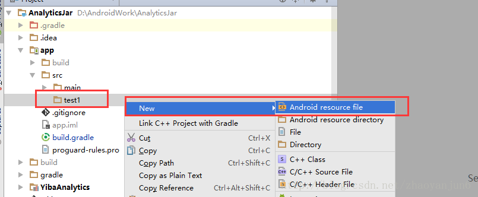
为什么在 test1 目录不能新建 Java 文件，因为 Gradle 中 SourceSet 默认定义的源码文件路径是src/main/java , 其他的文件下下面的源码我们自然无法访问。解决这个问题也很简单，我们需要在 SourceSet 中增加一个源码路径即可。如下所示：
android {
sourceSets {
main {
java {
srcDir 'src/test1' //指定源码目录
}
}
}
}
然后同步一下，就可以在 test1 目录中新建 Java 文件了。如下图所示：
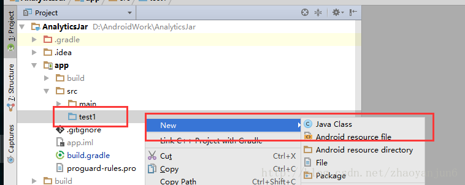
当然我们也可以同时指定多个源码目录，比如同时指定 test1 , test2 , test3 为源码目录。
android {
sourceSets {
main {
java {
srcDir 'src/test1' //指定 test1 为源码目录
srcDir 'src/test2' //指定 test2 为源码目录
srcDir 'src/test3' //指定 test3 为源码目录
}
}
}
}
或者 这样写 ：
android {
sourceSets {
main {
java.srcDirs( 'src/test1' , 'src/test2' ,'src/test3' )
}
}
}
效果如下图所示：
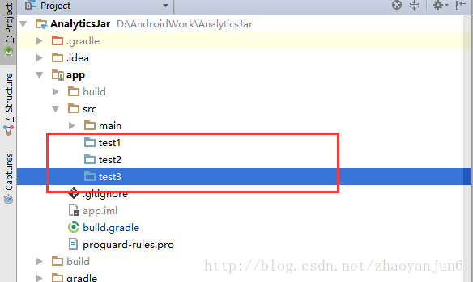
SourceSet 定义资源目录
定义 test1 目录 Java 源代码路径、res 资源目录。目录结构如下图所示：
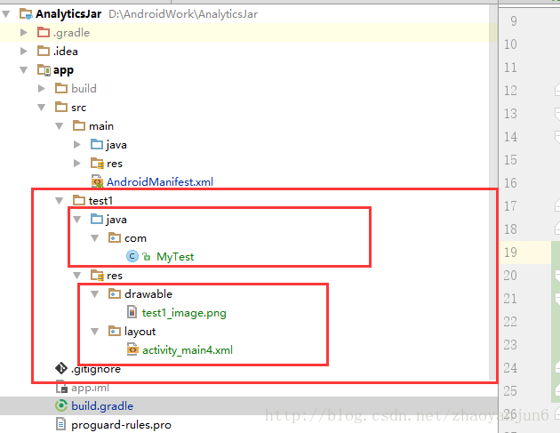
android {
sourceSets {
main {
java.srcDirs('src/test1/java') //定义java 源代码
res.srcDirs('src/test1/res') //定义资源目录（layout , drawable,values）
}
}
}
SourceSet 实现 layout 分包
对于一个大项目来说，页面太多，布局文件就很多，有时在众多布局文件中找某个模块的布局文件，很是痛苦，为了解决这个问题，我们可以在创建多个 layout 目录，不同模块的布局文件放在不同的 layout 目录中，这样查找起来，就容易很多。
例子：
比如我们的项目中，有两个模块分别为：登录、注册。
-
第一步：把项目中 layout 文件夹改名字为 layouts
-
第二步：在 layouts 目录下，分别创建 login 、register 目录 。
-
第三步：分别在 login 、register 目录下创建 layout 目录。注意这一步是必须的，否则会报错。
-
第四步：把 登录布局文件、注册布局文件 分别放在 第三步创建的对应的 layout 目录下。
效果图如下：
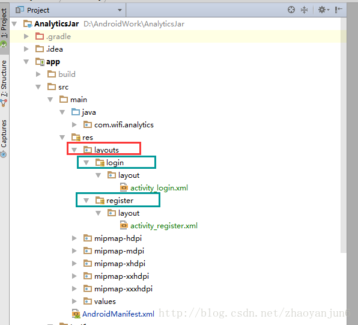
SourceSet 实现如下：
android {
sourceSets {
main {
res.srcDirs 'src/main/res/layouts/login' //定义登录布局目录
res.srcDirs 'src/main/res/layouts/register' //定义注册布局目录
}
}
}
SourceSet 定义 AndroidManifest 文件
指定 test1 目录下的 AndroidManifest 文件。项目结构如下图所示：
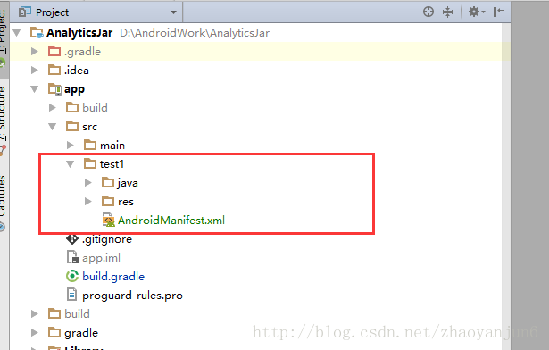
代码如下：
android {
sourceSets {
main {
manifest.srcFile 'src/test1/AndroidManifest.xml'
}
}
}
在组件化开发中, 我们需要针对 debug 与 release 模式下, 指定不同的 Manifest 文件, 代码如下：
android {
def appDebug = false;
buildTypes {
release {
minifyEnabled false
proguardFiles getDefaultProguardFile('proguard-android.txt'), 'proguard-rules.pro'
appDebug = false;
}
debug {
minifyEnabled false
proguardFiles getDefaultProguardFile('proguard-android.txt'), 'proguard-rules.pro'
appDebug = false;
}
}
sourceSets {
main {
if (appDebug) {
manifest.srcFile 'src/test1/AndroidManifest.xml'
} else {
manifest.srcFile 'src/main/AndroidManifest.xml'
}
}
}
}
SourceSet 定义 assets 目录
Android Studio 项目目录中，assets 默认目录如下：
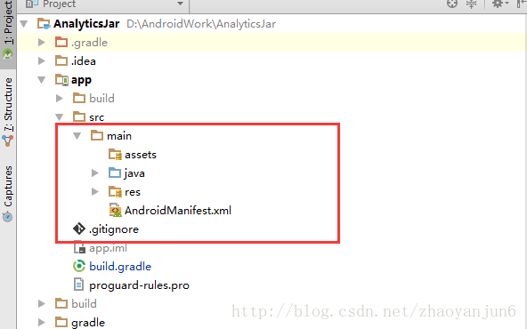
如何重新定义 assets 目录 。在项目的根目录下创建 assets 目录，如下图所示：
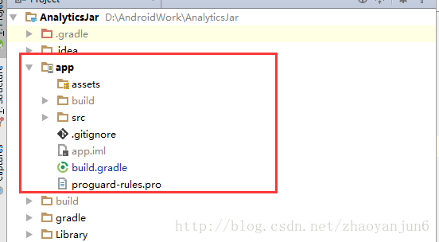
sourceSets 定义代码如下：
android {
sourceSets {
main {
assets.srcDirs = ['assets']
}
}
}
SourceSet 定义其他资源
android {
sourceSets {
main {
jniLibs.srcDirs //定义 jni 目录
aidl.srcDirs //定义 aidl 目录
}
}
}
applicationVariants
定义 versionName 、VersionCode
在打包的时候分 debug 、release 版本 , 需要控制 versionName
android {
applicationVariants.all { variant ->
def flavor = variant.mergedFlavor
def versionName = flavor.versionName
if (variant.buildType.isDebuggable()) {
versionName += "_debug" //debug 名字
} else {
versionName += "_release" //release 名字
}
flavor.versionName = versionName
}
}
定义 APK 包的名字
apply plugin: 'com.android.application'
android {
defaultConfig {
applicationId "android.plugin"
minSdkVersion 14
targetSdkVersion 25
versionCode 1
versionName "1.0"
}
buildTypes {
release {
minifyEnabled false
proguardFiles getDefaultProguardFile('proguard-android.txt'), 'proguard-rules.pro'
}
debug {
minifyEnabled false
proguardFiles getDefaultProguardFile('proguard-android.txt'), 'proguard-rules.pro'
}
}
//定义渠道
productFlavors {
xiaomi {
//小米
}
wandoujia {
// 豌豆荚
}
}
//打包命名
applicationVariants.all {
variant ->
variant.outputs.each {
output ->
//定义一个新的apk 名字。
// 新名字 = app 名字+ 渠道号 + 构建类型 + 版本号 + 当前构建时间
def apkName = "appName_``{variant.flavorName}_``{buildType.name}_v``{variant.versionName}_``{getTime()}.apk";
output.outputFile = new File(output.outputFile.parent, apkName);
}
}
}
//获取当前时间
def getTime() {
String today = new Date().format('YY年MM月dd日HH时mm分')
return today
}
效果图如下：
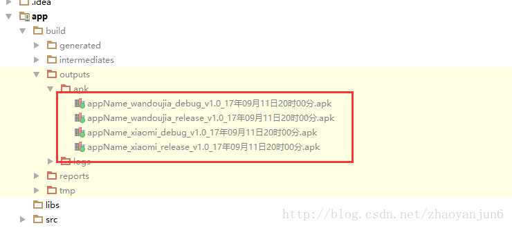
Task
定义 task
//定义任务1
task task1<<{
println 'task1'
}
//定义任务2
task task2<<{
println 'task2'
}
mustRunAfter 定义 task 执行顺序
//task2 的执行顺讯在 task1 之后
task2.mustRunAfter task1
- 测试1 ： gradlew task1
效果如下：
:app:task1
task1
- 测试2 ： gradlew task2
效果如下：
:app:task2
task2
- 测试3 ： gradlew task1 task2
效果如下：
:app:task1
task1
:app:task2
task2
- 测试4 ： gradlew task2 task1
效果如下：
:app:task1
task1
:app:task2
task2
结论
如果单独执行 task1 就只会执行 task1 的任务；单独执行 task2 就只会执行 task2 的任务；
如果同时执行 task1、task2 , 一定会先执行 task1 , 等 task1 执行完后，就会执行 task2 内容。
扩展
上面 mustRunAfter 我们还有一种写法，如下图所示：
task2 {}.mustRunAfter task1
这个写法的效果和 mustRunAfter 是一样的，当然我们还可以在 花括号里面写一些任务，比如 ：
task2 {
println '我最先执行'
}.mustRunAfter task1
下面做个测试，测试命令如下：
gradlew task2 task1
效果如下：
我最先执行
:app:task1
task1
:app:task2
task2
dependsOn 定义 task 依赖
task2 任务依赖于 task1 ,执行 task2 就会先执行 task1
task2.dependsOn task1
测试：
gradlew task2
效果如下：
:app:task1
task1
:app:task2
task2
常用 Gradlew 命令
- 1、gradlew -v : 查看版本号
------------------------------------------------------------
Gradle 3.3
------------------------------------------------------------
Build time: 2017-01-03 15:31:04 UTC
Revision: 075893a3d0798c0c1f322899b41ceca82e4e134b
Groovy: 2.4.7
Ant: Apache Ant(TM) version 1.9.6 compiled on June 29 2015
JVM: 1.8.0_112 (Oracle Corporation 25.112-b15)
OS: Windows 10 10.0 amd64
- 2、gradlew task ： 查看所有的 task